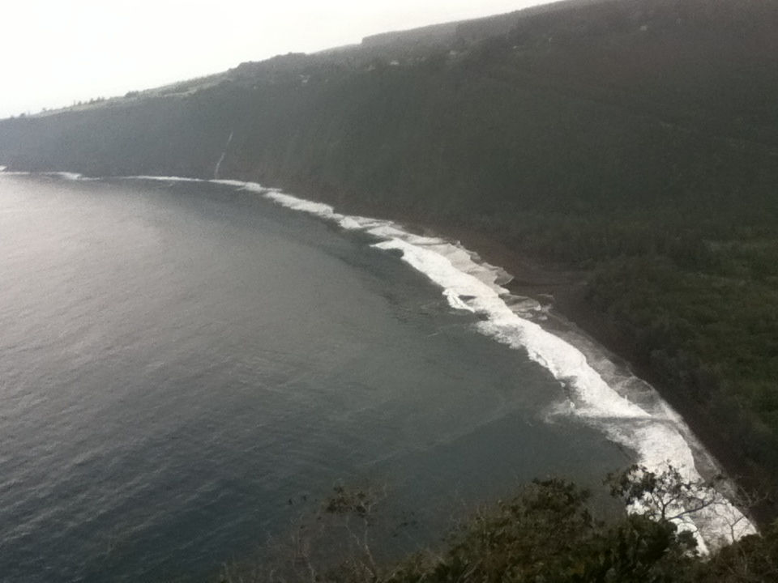

Waipio Valley had many battles espacially at the beach.

The whole valley has temples(heiaus) everywhere. The most sacred being Pakaalana, one of two "places of refuge"(pu'uhonua), the other one is Pu'uhonua O Honaunau south Kona.
Ancient burial caves are located in sides of steep cliffs on either side of the valley containing bones of the kings(Ali'i). These sites are forbiden to disterb, or even try to find. The Ali'i protect the area with strong spiritual energies(Mana) for residents of the valley.
Even when 1946 tsunami hit, and the flood of 1979, not one person died.